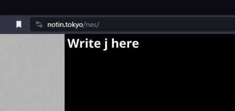
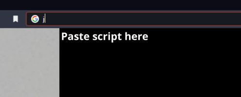
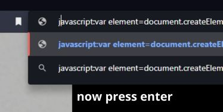

export:
1) Press the EXPORT button, it will copy a script to your clipboard
2) Open https://notin.tokyo/nes/
3) Load the game you want to export the save from
4) Write "j" in the search bar and paste the copied script;
the script should starts with "javascript:", then press enter*
Now there should start a download of the .nsav file of your game, you can later import this file using the IMPORT button
import:
1) Press the IMPORT button, it will copy a script to your clipboard
2) Open https://notin.tokyo/nes/
3) Write "j" in the search bar and paste the copied script; the script should starts with "javascript:", then press enter*
4) A button will appear in the bottom left corner (couldn't do better, sorry)
5) Press the button appeared in the bottom left corner and select the .nsav file previously exported
Now the save should be imported, you can load up the game with the improted save data
*paste script procedure:
 ->  -> 
note! .nsav files are different from .sav files used by most nes emulators, you can upload a save file and use the NSAV -> SAV button to convert a .nsav file to .sav and the SAV -> NSAV to convert from .sav to .nsav
note 2! the name of the imported file should be the same name as the game you will load, adding .nsav;
example: you want to import the save for the game you load with the file "game.nes", then the .nsav file should be name "game.nes.nsav"
note 3! I am a really lazy person, the files extensions are case-sensitive, that means if your save file is named "game.SAV" it will not work, you have to rename it "game.sav"